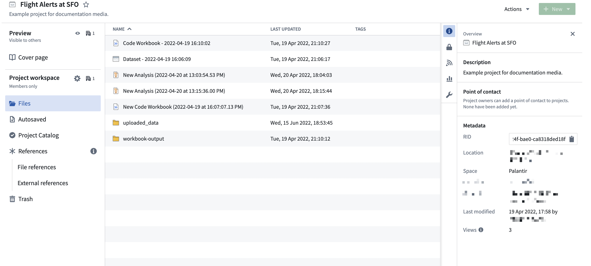
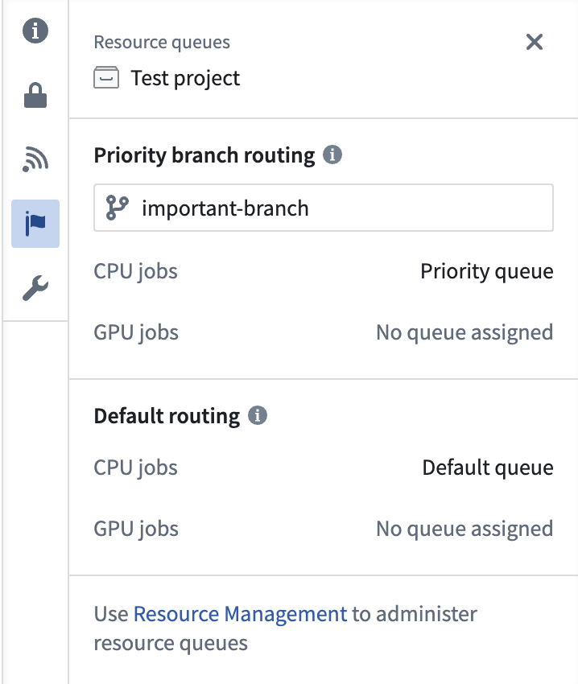

You can open the resource details panel by selecting one of the right-hand side icons on the Project page.

The Overview panel gathers general information about the resource, including its resource identifier (RID). On a project's Files page and on folder pages, the details panel opens to Overview unless it is already showing another panel. To return to it later, select the information icon among the right-hand side icons. The icon's tooltip reads Overview.
For a project, Overview shows a Description, the Project point of contact, and a Metadata section. Between Description and Project point of contact, three more sections can appear:
The first field in Metadata is RID, the project's resource identifier. To copy it, select the copy button at the end of the read-only RID field.
The remaining Metadata fields, in the order they appear, are Location, Space, Iceberg storage, Tags, Portfolio, Status, Collections, Created, Last modified, and Views. Fields are shown only when details are available.
If you can see a project's cover page but not its contents, Overview shows a reduced Metadata section containing only the project's own RID, Location, and Space.
This section provides a Markdown-based rich text editor to write documentation at the Project or folder level, similar to all the documentation sections throughout the workspace.
The Activity log provides a running view of changes made throughout the Project and is only visible at the Project level. For teams building out a new Project or maintaining a long-term Project, the Activity log makes it easier to understand recent activity and collaboration. Note that the Activity log only stores the last month of activity.
If necessary, you can make your Project and its description discoverable to people in other organizations. This functionality is under development.
The Access tab in the resource panel allows you to manage group and user access roles within a Project.
For a Project Owner, this panel provides an interface to add required markings, manage default access, and configure additional access by granting roles to other users and groups.
For users with a Viewer or Editor role, the Access panel shows an overview of the current groups with Project access.
Learn more about how projects and roles organize work and control access in Foundry.
Learn more about checking someone's permissions on a Project, folder, or file by using the Check access panel in the workspace sidebar or the Data Lineage tool.
The Resource queues tab allows you to view which resource queues are assigned to the Project.
